Tables of Signs
Basic Signs
Table 1. General Signs (Pars. 1.1 – 1.16)
| Music parentheses | |
| * Special parentheses | |
| Print pagination indicator | |
| "Equals" in metronome or equivalency indications | |
| Print bar line | (space) |
| Print dotted bar line | |
| Bar line for unusual circumstances | |
| Final double bar | |
| Sectional double bar | |
| Braille music hyphen | |
| Prefix for transcriber-added signs | |
| Square bracket above staff | |
| * Second square bracket above staff | |
| Broken square bracket above staff | |
| Open-ended square bracket above staff | |
| Square bracket below staff | |
| * Second square bracket below staff | |
| Broken square bracket below staff | |
| Open-ended square bracket below staff | |
| Small brackets enclosing print symbol (fascimile) | |
| Coincidence of notes | |
| Opening music code indicator | |
| Music code terminator | |
| Punctuation indicator | |
| Literary comma with music signs |
Table 2. Notes and Note Values (Pars. 2.1 – 2.6)
Throughout this work: whole note = semibreve; half note = minim; quarter note = crotchet; eighth note = quaver.
| C - D - E - F - G - A - B | ||
| Whole or 16th note | ||
| Half or 32nd note | ||
| Quarter or 64th note | ||
| Eighth or 128th note | ||
| 256th note | etc. | |
| Breve (double whole) | (a) | etc. |
| (b) | ||
| Reciting note in chant | etc. | |
| Dot for added value | ||
| Value signs: | ||
| 8ths and larger | ||
| 16ths and smaller | ||
| 256th notes | ||
| Prefixes for specially shaped notes: | ||
| Solid note head only | ||
| X-shaped note head | ||
| Diamond-shaped note head |

|
|
| Indeterminate or approximate pitch | ||
| Approximate pitch at end of slanted line | ||
Table 3. Octave Marks (Pars. 3.1 – 3.3.2)
| First octave C | |
| Second octave C | |
| Third octave C | |
| Fourth octave C | |
| Fifth octave C | |
| Sixth octave C | |
| Seventh octave C | |
| A below first octave | |
| C above seventh octave |
Table 4. Clef Signs (Pars. 4.1 – 4.5)
| G clef (treble) | |
| F clef (bass) | |
| C clef (alto) | |
| G clef on first line (French violin) | |
| F clef on third line (baritone) | |
| C clef on fourth line (tenor) | |
| G clef with small 8 above | |
| G clef with small 8 below | |
| Modified bass clef in right-hand part | |
| Modified treble clef in left-hand part |
Table 5. Rests (Pars. 5.1 – 5.4)
| Whole rest or 16th | ||
| Half rest or 32nd | ||
| Quarter rest or 64th | ||
| 8th rest or 128th | ||
| 256th rest | ||
| Dot for added value | ||
| Breve (double whole) rest | (a) | |
| (b) | ||
Table 6. Accidentals and Key Signatures (Pars. 6.1 – 6.5.1)
| Sharp | |
| Double sharp | |
| Flat | |
| Double flat | |
| Natural | |
| Quarter step accidental | |
| Three-quarter step accidental | |
| Prefix for accidental printed above or below note | |
| Three sharp signature | |
| Three flat signature | |
| Four sharp signature | |
| Four flat signature |
Table 7. Meter Indications and Time Devices (Pars. 7.1 – 7.2.3)
| Four-four time | |
| Six-eight time | |
| Common time | |
| Alla breve (cut time) | |
| Numeral over note value | |
| Signature with two or more upper numerals | |
| Combined time signature | |
| Combined time signature with plus sign | |
| Combined time signature with parentheses | |
| One second | |
| Two seconds, etc. | |
| Ten seconds, etc. | |
| Extension of time |
Table 8. Irregular Note Grouping (Pars. 8.3 – 8.6)
| Braille music comma | |
| Terminal braille music comma | |
| Single-cell sign for triplet | |
| Three-cell sign for triplet | |
| Group of two notes, etc. | |
| Group of ten notes, etc. |
Table 9. Intervals (Pars. 9.1 – 9.5.3)
For intervals larger than an octave see Pars. 9.1.1 and 9.3.4.
| Second | |
| Third | |
| Fourth | |
| Fifth | |
| Sixth | |
| Seventh | |
| Octave | |
| Tone cluster: | |
| with naturals | |
| with flats | |
| with sharps | |
| on all notes (other combinations possible) | |
| of unspecified pitches | |
| Moving-note sign: | |
| for one interval | |
| for two or three intervals | |
Table 10. The Tie (Pars. 10.1 – 10.3)
| Tie between single notes | |
| Two or more ties between chords | |
| Accumulating arpeggio |
Table 11. In-Accord and Measure-Division Signs (Pars. 11.1 – 11.4)
| Full-measure in-accord | |
| Part-measure in-accord | |
| Measure division |
Table 12. Stem Signs (Pars. 12.1 – 12.4)
| Whole "stem" | |
| Half stem | |
| Quarter stem | |
| 8th stem | |
| 16th stem | |
| 32nd stem |
Table 13. The Slur (Pars. 13.1 – 13.10.2)
| Simple short slur | 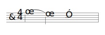 | |
| Doubled long slur | 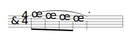 | |
| Bracket long slur | ||
| Convergent short slurs | 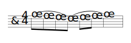 | |
| Convergent long slurs (bracket) | 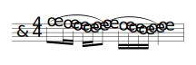 | |
| Slur from part to part | 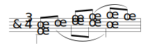 | |
| Long slur from part to part | 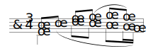 | |
| * Continuation of part-to-part slur | ||
| Transfer of slur between staves | 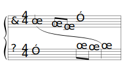 | |
| Destination of slur transferred between staves | ||
| Straight line between staves | 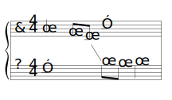 | |
| End of straight line between staves | ||
| The half phrase | 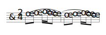 | |
| Slur for short appoggiatura (facsimile) | 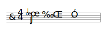 | |
| Slur that does not come from a note | 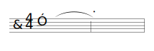 | |
| Slur that does not lead to a note | 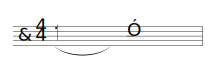 |
Table 15. Fingerings (Pars. 15.1 – 15.4.1)
| First finger | ||
| Second finger | ||
| Third finger | ||
| Fourth finger | ||
| Fifth finger | ||
| Change of fingers | ||
| Alternative fingerings: | ||
| Omission of first fingering | ||
| Omission of second fingering | ||
Table 16. Ornaments (Pars. 16.1 – 16.8)
| (A) Appoggiaturas (Pars. 16.2 – 16.2.3) | |||
| Long appoggiatura | |||
| Short appoggiatura | |||
| (B) Trills and Turns (Pars. 16.3 – 16.4.2) | |||
| Trill | |||
| Inflected trill | |||
| Turn between notes | |||
| Turn above or below a note | |||
| Inverted turn between notes | |||
| Inverted turn above or below note | |||
| Turn with inflected upper note | |||
| Turn with inflected lower note | |||
| Turn with both notes inflected | |||
| (C) Mordents (Par. 16.5) | |||
| Upper mordent | |||
| Extended upper mordent | |||
| Lower mordent | |||
| Extended lower mordent | |||
| Inflected upper mordent | |||
| Inflected lower mordent | |||
| (D) Glissando (Par. 16.6 – 16.6.4) | |||
| Straight or wavy line between successive notes | |||
| (E) Ornaments Derived from Jazz Idioms (Par. 16.7) | |||
| Rising curved line before the note | |||
| Rising straight or wavy line before the note | |||
| Small curved line above the note | |||
| Falling curved line after the note | |||
| Falling straight or wavy line after the note | |||
| (F) Unusual Ornaments (Par. 16.8) | |||
| Extended upper mordent: | |||
| preceded by a turn |

|
||
| preceded by an inverted turn | |||
| followed by a turn |

|
||
| followed by an inverted turn | |||
| preceded by a descending curve | |||
| followed by a descending curve | |||
| preceded by an ascending curve | |||
| followed by an ascending curve | |||
| followed by a curve between two adjacent notes (slide) | |||
| Descending curve preceding a note | |||
| Ascending curve preceding a note | |||
| Upward-pointing wedge between two adjacent notes (Nachschlag) | |||
| Downward-pointing wedge between two adjacent notes (Nachschlag) | |||
| Short curve between two adjacent notes (passing note) | |||
| Short thick line between two adjacent notes (anticipation) | |||
| Short oblique strike through a chord (chord acciaccatura) |

|
||
| Curve and dots above or below a note (Bebung: the number of dots in the print regulates the number of staccato signs.) | |||
Table 17. Print Repeats (Pars. 17.1 – 17.3)
| Double bar followed by dots | ||
| Double bar preceded by dots | ||
| Prima volta (first ending) | ||
| Seconda volta (second ending) | ||
| Continuous wavy or spiraling line for aperiodic repetition | ||
Table 18. Braille Full- and Part-Measure Repeats, Parallel Movement, and Sequence Abbreviation (Pars. 18.1 – 18.7.2)
| Measure of part-measure repeat | |
| Separation of part-measure repeats of different value | |
| Parallel movement | |
| Sequence abbreviation | |
| Sequence abbreviation in facsimile | |
| Isolation of repeated passage in unmeasured music |
Table 19. Braille Numeral Repeats (Pars. 19.1 – 19.7)
| Conjunct backward-numeral repeat | |
| Disjunct backward-numeral repeat | |
| Single measure-number repeat | |
| Inclusive measure-number repeat |
Table 20. Da Capo and Dal Segno Repeats (Pars. 20.1 – 20.3)
| Print da capo or D.C. | |
| Braille-only da capo | |
| Print segno | |
| Braille-only segno (with letter) | |
| Braille-only dal segno (with letter) | etc. |
| End of braille-only segno passage | |
| Print encircled cross (coda sign) |
Table 21. Annotations and Variants (Pars. 21.1 – 21.6.2)
| Music asterisk | |
| Footnote separator (full line) | |
| Music parentheses | |
| * Special parentheses | |
| Notes printed in large type | etc. |
| Notes printed in small type | |
| Variant indicator | |
| Variant indicator with numeral | |
| Prefix for editorial marking |
Table 22. Nuances (Pars. 22.1 – 22.4.1)
| (A) Symbols That Precede the Note (Pars. 22.1 – 22.1.1) | |||
| Dot above or below a note (staccato) | |||
| Pear-shaped dot above or below a note (staccatissimo) | |||
| Dot and short line above or below note (mezzo-staccato) | |||
| Short line above or below a note (agogic accent or tenuto) | |||
| Thin converging horizontal wedge (accent) | |||
| * Extended converging horizontal wedge associated with one note (expressive accent) | |||
| Thin diverging horizontal wedge (reversed accent) | |||
| Thick inverted or normal V (martellato) | |||
| Vertical wavy line or curve in one staff (upward arpeggio) | |||
| Upward arpeggio through two staves | |||
| Downward arpeggio in one staff | |||
| Downward arpeggio through two staves | |||
| Diverging and converging horizontal wedges (swell on one note) | |||
| (B) Symbols That Follow the Note (Par. 22.2) | |||
| Fermata (hold or pause): | |||
| over or under a note | |||
| between notes | |||
| above or below a bar line | |||
| above or below a sectional double bar | |||
| above or below a final double bar | |||
| with squared shape | |||
| tent-shaped | |||
| Breath or break mark (a) | |||
| (b) | |||
| (C) Words and Abbreviated Words (Pars. 22.3 – 22.3.9) | |||
| Braille word sign | |||
| Mark (period) of abbreviation | |||
| pp | |||
| p | |||
| mf | |||
| f | |||
| ff | |||
| cresc. | |||
| decresc. | |||
| dimin. | |||
| * L.V. | |||
| Diverging hairpin and terminator | |||
| Converging hairpin and terminator | |||
| Line of continuation and terminator (first) | |||
| Line of continuation and terminator (second) | |||
| (D) Special Beams (Pars. 22.4 – 22.4.1) | |||
| Diverging beams (accelerando) | |||
| Parallel beams within unusual group | |||
| Converging beams (ritardando) | |||
| Termination of special beams | |||
Table 23. Chord Symbols (Pars. 23.1 – 23.2)
| Natural | |
| Flat | |
| Sharp | |
| Plus | |
| Minus | |
| Circle (diminished) | |
| Circle bisected by a line (half diminished) | |
| Triangle | |
| Triangle bisected by a line | |
| Italic 7 for a specialized seventh chord | |
| Slash | |
| * Parentheses | |
| * NC or N.C. (for "no chord") | |
| * Tacet or Tacet. |